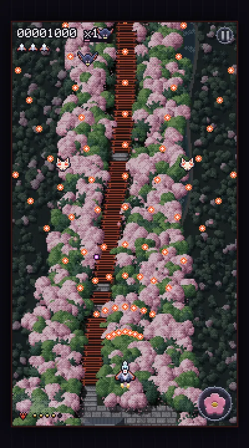
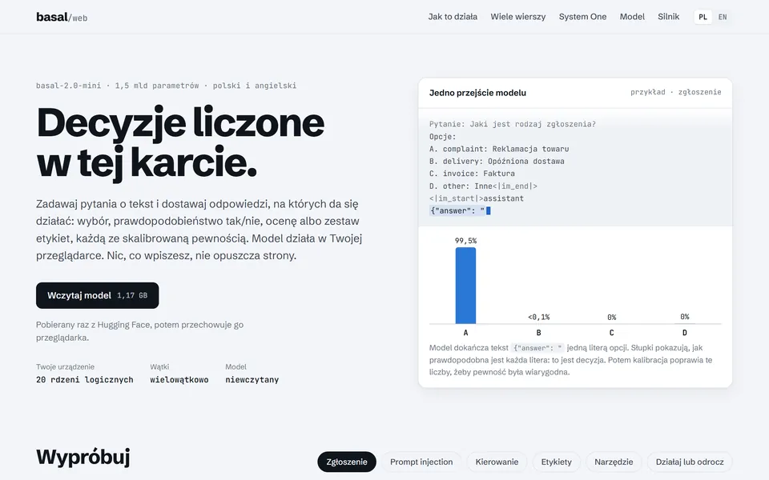
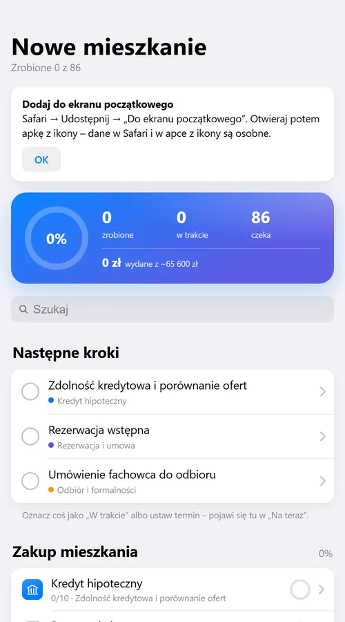
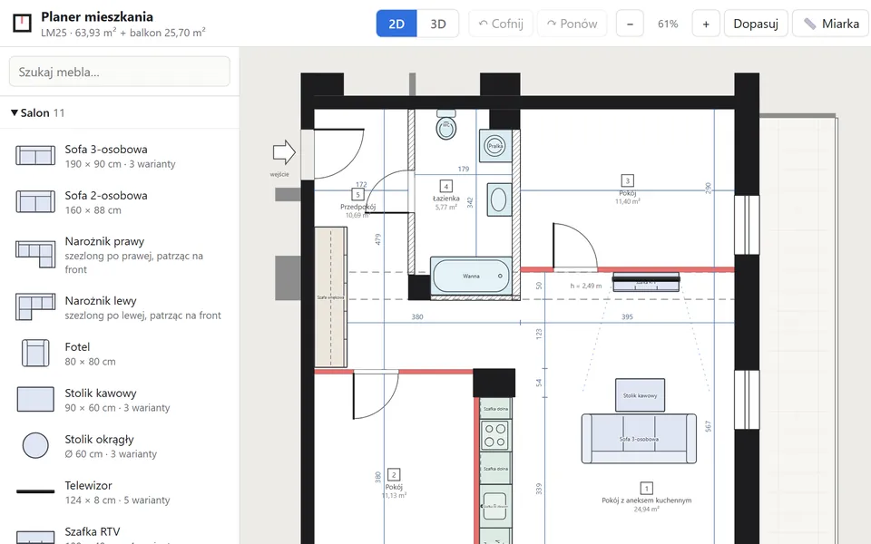
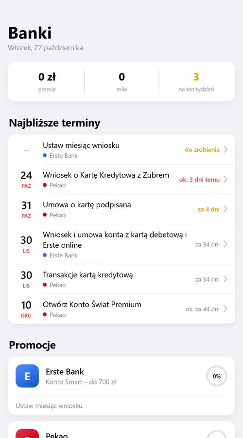

Damian Grzyska.
Programuję zawodowo od 2016 roku: Java, Spring, Angular, AWS. Po godzinach robię małe aplikacje do własnych spraw: na wyjazd, na przeprowadzkę, do pilnowania promocji w bankach. Czasem coś z modelami językowymi. Od 2024 roku w projektach wspomagam się AI.
I've written software for a living since 2016: Java, Spring, Angular, AWS. After hours I make small apps for my own errands: a trip, a move, keeping track of bank promotions. Sometimes something with language models. Since 2024 I've been using AI to help with my projects.
ProjektyProjects06
Każdy działa w całości w przeglądarce. Nie stoi za nimi mój serwer, a to, co wpiszesz, zostaje na Twoim urządzeniu.
Each one runs entirely in the browser. There's no server of mine behind them, and what you type stays on your device.
-
01
Shmup JaponiaShmup Japan
Pionowa strzelanka nad tysiącem bram torii Fushimi Inari w Kioto. Grafika rysowana kodem, muzyka grana na żywo przez Web Audio.A vertical shoot-'em-up over the thousand torii gates of Fushimi Inari in Kyoto. Art drawn by code, music played live through Web Audio.
2026

-
02
basal w przeglądarcebasal in the browser
Pytania o tekst i odpowiedzi ze skalibrowaną pewnością. Model 1,5 mld parametrów liczy na Twoim urządzeniu.Questions about a text, answered with calibrated confidence. A 1.5B-parameter model runs on your device.
2026

- 03 KiusiuKyushu Przewodnik na 22 dni w Japonii: plan każdego dnia, mapy, koszty w jenach i złotówkach. Działa bez internetu.A guide to 22 days in Japan: a plan for every day, maps, costs in yen and złoty. Works offline. 2026
-
04
Nowe mieszkanieNew flat
Zakup i urządzanie mieszkania jako 86 kroków do odhaczenia, z terminami i budżetem.Buying and furnishing a flat as 86 steps to tick off, with deadlines and a budget.
2026

-
05
Planer mieszkaniaFlat planner
Meble przeciągane na wierny rzut mieszkania, z widokiem 3D i układem udostępnianym linkiem.Drag furniture onto an accurate floor plan, walk around it in 3D, share the layout as a link.
2026

-
06
BankiBank promos
Warunki promocji bankowych do odhaczania, z terminami, żeby premia nie przepadła.Bank promotion conditions to tick off, with deadlines, so the bonus doesn't slip away.
2026
